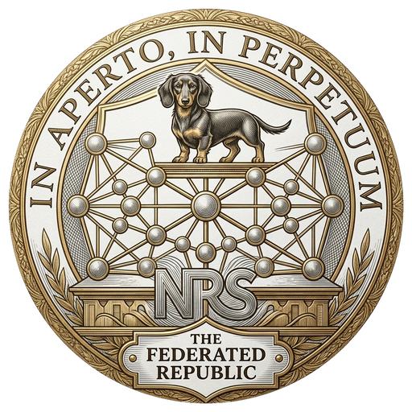

Sunderland Military Structure — Principal Findings
Sunderland's military capacity is not unified under a single command structure. The ████████████████████ assessment identifies three distinct operational factions, each with independent command authority, independent logistics, and divergent strategic objectives regarding Lake Varda and the Republic's eastern border.
Faction A — ████████████: Controls the official Sunderland foreign ministry channel and the diplomatic apparatus through which the Republic's prior three diplomatic notes were transmitted. This faction has demonstrated ████████████████████████████████ and is assessed as the faction most responsive to diplomatic pressure. It does not control the Lake Varda patrol operations.
Faction B — ████████████: Controls eastern lake operations, including the naval patrol assets responsible for the Month 10 vessel incursion and the Month 12, Day 1 incident in which three civilians were killed. This faction has ███████████████████████████████████████████████. Assessment: Faction B does not receive or act on communications transmitted through Faction A's diplomatic channels. The Republic's diplomatic notes have not reached the command structure responsible for Lake Varda operations.
Faction C — ████████████: Controls ████████████████████ and maintains relationships with Caldris economic interests in the region. Assessment: ████████████████████████████████████████████████████████████████████████████████████████.
Key finding: The diplomatic channel through which the Republic has communicated its concerns about Lake Varda is not connected to the operational military command responsible for Lake Varda incidents. Continued reliance on this channel as the primary instrument of de-escalation is assessed as ████████████████████.
The decision to publish this summary in redacted form to the National Record System reflects a judgment that the Republic's public discourse on the Sunderland situation has been conducted without access to information that materially affects the range of available policy responses. The finding that the diplomatic channel and the operational military command responsible for Lake Varda incidents are structurally distinct entities is not a minor technical detail. It changes the assessment of what diplomatic instruments can accomplish and what additional instruments may be necessary.
This publication is made in my capacity as Director of Foreign Affairs under §2.3. It is not made in my capacity as a declared candidate for Legat Consul. Those are different roles. The distinction matters. The information was available to this office before I declared my candidacy. Its publication is overdue regardless of the electoral calendar.
Classified original held under §2.3. This record is the authorized public version. Permanent and tamper-evident.